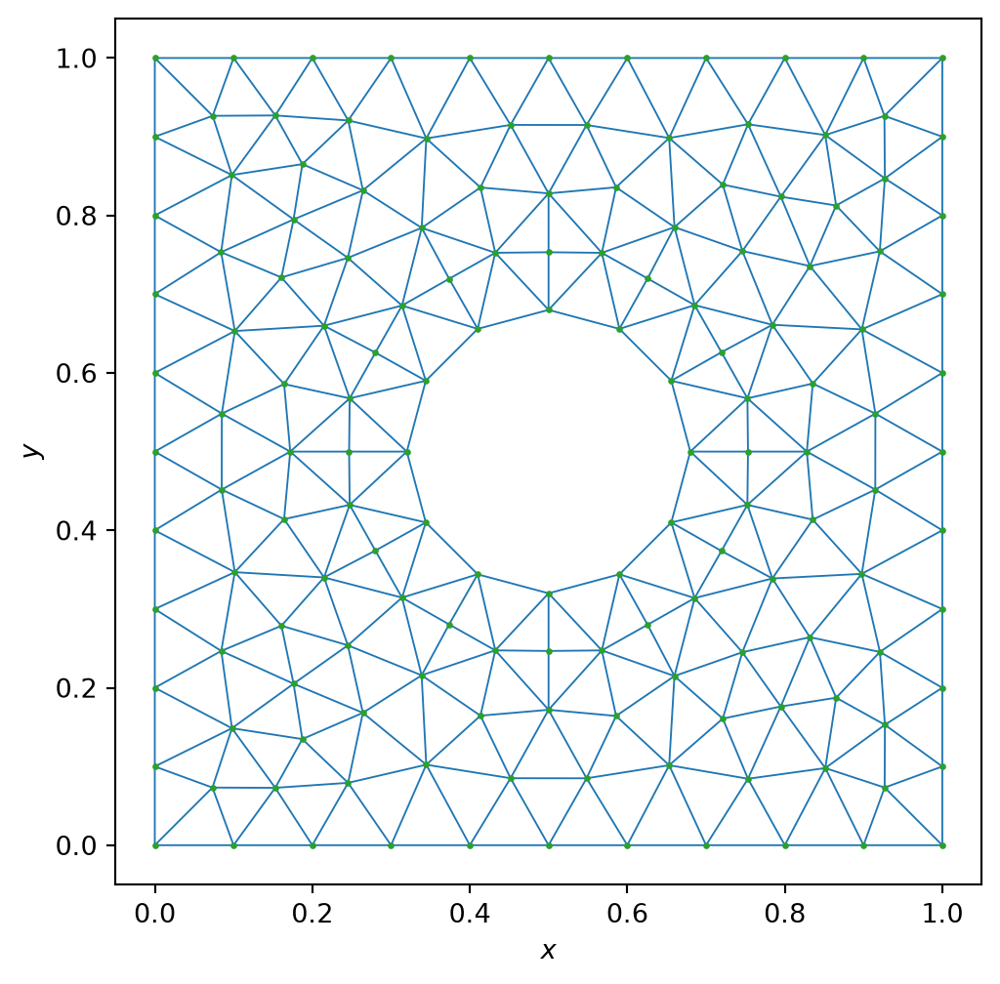
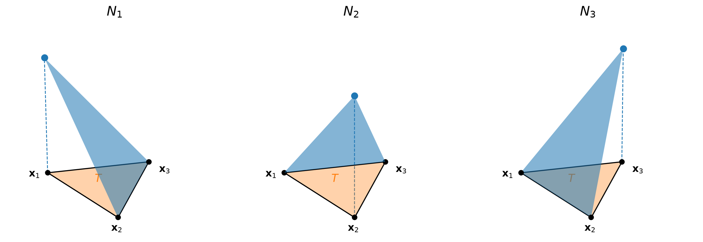
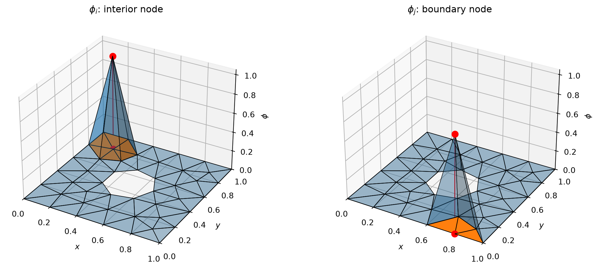
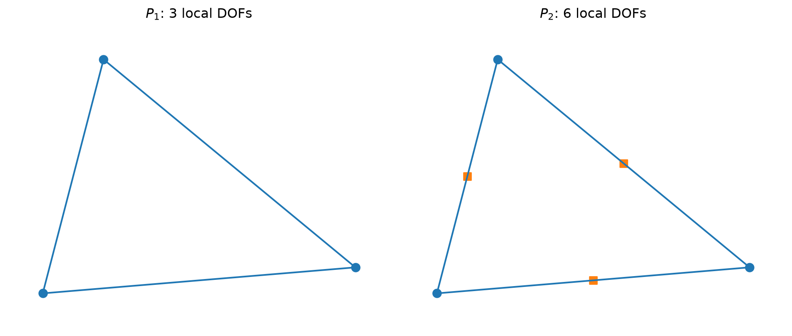
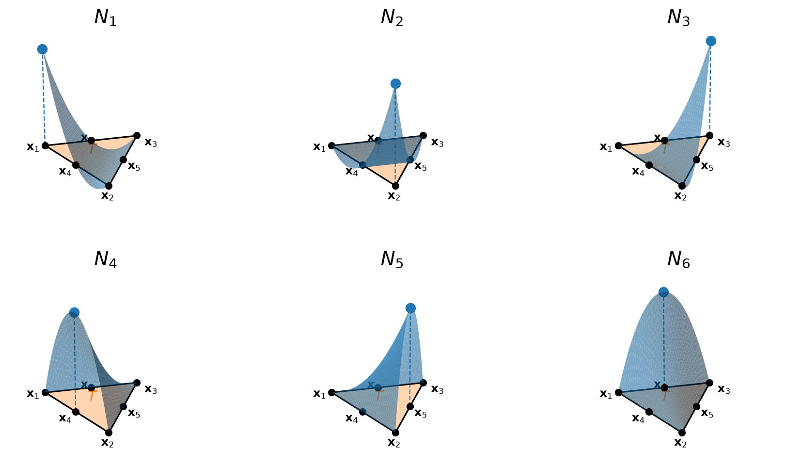
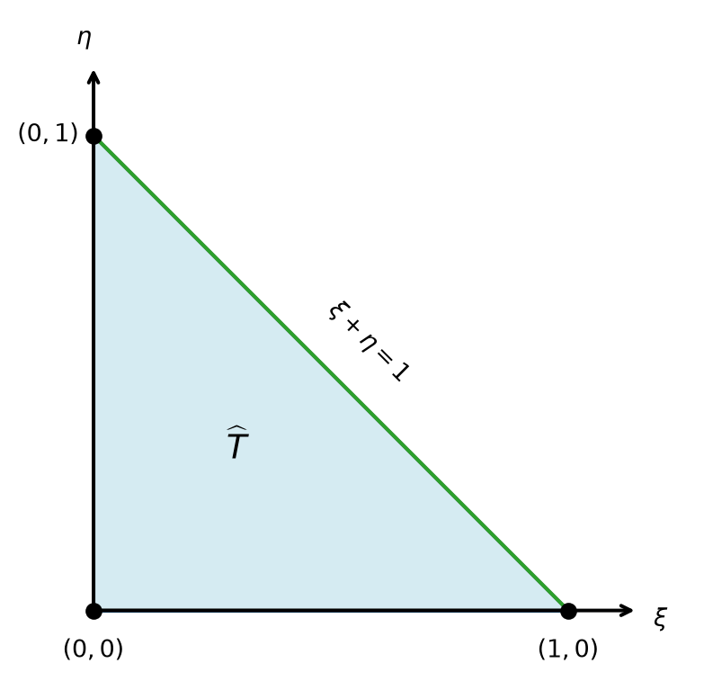
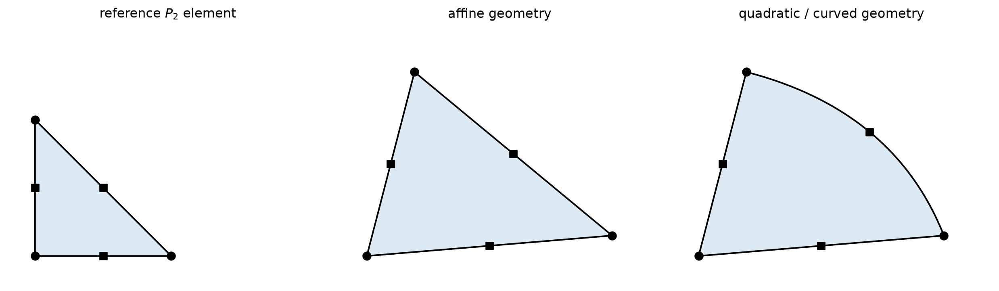
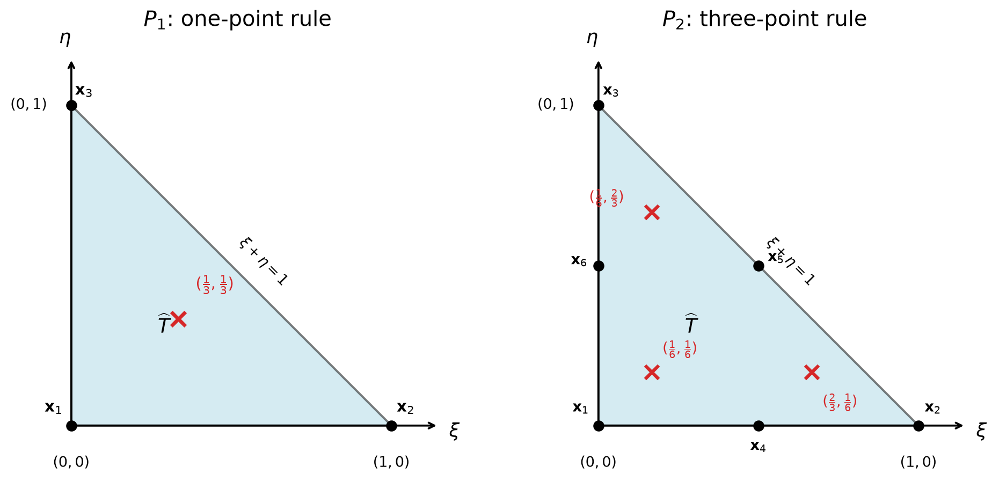
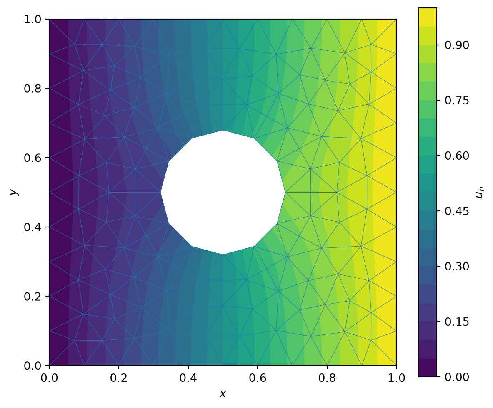

Session 2 — Construction of the finite element method
Learning objectives
By the end of this session, students should be able to:
- explain how a mesh is used to construct a finite-element approximation space;
- construct and interpret \(P_1\) and \(P_2\) triangular finite elements;
- derive element contributions and explain their assembly into the global system;
- relate local support of finite-element basis functions to matrix sparsity;
- impose Dirichlet boundary conditions in the discrete problem;
- use reference elements, mappings, and numerical quadrature to compute element matrices;
- explain how isoparametric elements can represent curved geometries.
Schedule
| Time | Topic |
|---|---|
| 0–10 min | Finite-element meshes |
| 10–25 min | \(P_1\) elements and shape functions |
| 25–45 min | Element contributions and assembly |
| 45–55 min | Local support, sparsity, and boundary conditions |
| 55–65 min | Quadratic \(P_2\) elements |
| 65–80 min | Reference elements and isoparametric mappings |
| 80–88 min | Numerical quadrature |
| 88–90 min | Finite-element algorithm and summary |
1 Finite-element mesh
The finite-element method starts from a tessellation of the computational domain into non-overlapping elements.
In two dimensions, we consider here triangular meshes,
\[ \boxed{ \Omega_h = \bigcup_{T\in\mathcal T_h} T, } \]
where
\[ \mathcal T_h = \{T_1,T_2,\ldots,T_{N_e}\} \]
is the set of mesh elements.
As an example, we consider a square domain containing a circular hole and generate a triangular mesh using Gmsh.
Strictly speaking, when straight-sided triangles are used to represent a curved boundary, the mesh defines a polygonal domain \(\Omega_h\) that approximates the exact geometry \(\Omega\). In this introductory course, we purposedly ignore this geometric approximation and identify the computational domain with the physical domain:
\[ \boxed{ \Omega_h \equiv \Omega. } \]
The treatment of curved geometries will be revisited later when introducing quadratic and isoparametric elements.
The mesh is represented computationally by
- the coordinates of the nodes, \(\mathbf{x}_i\);
- the element connectivity, which specifies which nodes belong to each element.
For a triangular element \(T\), if its three vertices are the nodes \(\mathbf{x}_{i_1}\), \(\mathbf{x}_{i_2}\), and \(\mathbf{x}_{i_3}\), then the associated connectivity is the index triplet \((i_1,i_2,i_3)\).
For each element,
\[ h_T = \operatorname{diam}(T) = \max_{\mathbf x,\mathbf y\in T} |\mathbf x-\mathbf y|, \]
and the global mesh size is
\[ \boxed{ h = \max_{T\in\mathcal T_h} h_T. } \]
The parameter \(h\) characterizes the spatial resolution of the mesh and will be used in Session 3 to study refinement and convergence.
2 \(P_1\) finite elements and shape functions

For the mesh above, we first consider linear triangular finite elements, usually denoted \(P_1\) elements.
The notation
\[ v_h|_T\in\mathbb P_1(T) \]
means that \(v_h\) is affine on each triangle:
\[ v_h|_T(x,y)=a+bx+cy. \]
A continuous \(P_1\) finite-element space is therefore
\[ \boxed{ V_h = \left\{ v_h\in C^0(\Omega): v_h|_T\in\mathbb P_1(T) \quad \forall T\in\mathcal T_h \right\}. } \]
Thus a \(P_1\) finite-element function is
- affine on each individual triangle;
- continuous across element edges.
2.1 Shape functions on one physical triangle
Consider one physical triangle
\[ T = \operatorname{conv} \{\mathbf x_1,\mathbf x_2,\mathbf x_3\}, \]
with
\[ \mathbf x_a=(x_a,y_a), \qquad a=1,2,3. \]
The local \(P_1\) shape functions are affine,
\[ N_a(x,y)=\alpha_a+\beta_a x+\gamma_a y, \]
and satisfy the nodal conditions
\[ \boxed{ N_a(\mathbf x_b)=\delta_{ab}, \qquad a,b=1,2,3. } \]
For example,
\[ N_1(\mathbf x_1)=1, \qquad N_1(\mathbf x_2)=N_1(\mathbf x_3)=0. \]
Consequently, a \(P_1\) function on \(T\) is completely determined by its values at the three vertices. These nodal values are the degrees of freedom of the element.
If the three vertices of \(T\) correspond to degrees of freedom \(i_1,i_2,i_3\), then
\[ \boxed{ u_h|_T(x,y) = \sum_{a=1}^{3}U_{i_a}N_a(x,y). } \]
The coefficients of \(N_a\) can be obtained from
\[ \begin{pmatrix} 1 & x_1 & y_1\\ 1 & x_2 & y_2\\ 1 & x_3 & y_3 \end{pmatrix} \begin{pmatrix} \alpha_a\\ \beta_a\\ \gamma_a \end{pmatrix} = \mathbf e_a. \]
Because the shape functions are affine,
\[ \boxed{ \nabla N_a = \begin{pmatrix} \beta_a\\ \gamma_a \end{pmatrix} } \]
is constant over the triangle.
2.2 Global basis functions with local support
A global nodal basis function \(\phi_i\) is obtained by joining the local shape functions associated with degree of freedom \(i\) over the neighboring elements.
For \(P_1\) elements,
\[ \phi_i(\mathbf x_j)=\delta_{ij}, \]
and the finite-element solution can be written as
\[ \boxed{ u_h = \sum_{i=1}^{N_{\mathrm{dof}}} U_i \phi_i, \qquad U_i=u_h(\mathbf x_i). } \]
Because each basis function is nonzero only on the elements sharing node \(i\), its support is the corresponding patch of triangles:
\[ \boxed{ \operatorname{supp}\phi_i = \bigcup \left\{ T\in\mathcal T_h: \mathbf x_i\in T \right\}. } \]
The following figure shows the global nodal basis functions associated with an interior node and a boundary node. The triangles belonging to the support are highlighted, and the selected node is marked both on the mesh plane and at the top of the basis function.

3 From the global Galerkin matrix to element contributions
For the Poisson problem, with \(k=1\) and homogeneous Neumann conditions on \(\Gamma_N\), the Galerkin formulation gives the global stiffness matrix
\[ \boxed{ K_{ij} = \int_\Omega \nabla\phi_i\cdot\nabla\phi_j \,d\Omega, } \]
and the global load vector
\[ \boxed{ F_i = \int_\Omega f\phi_i \,d\Omega. } \]
Dirichlet conditions are imposed subsequently through the prescribed degrees of freedom.
We therefore need to compute these integrals for all pairs of global basis functions. The mesh provides a natural way to do this. Since the domain is the union of the elements,
\[ \Omega = \bigcup_{T\in\mathcal T_h} T, \]
an integral over the domain can be written as a sum of integrals over the elements:
\[ K_{ij} = \sum_{T\in\mathcal T_h} \int_T \nabla\phi_i\cdot\nabla\phi_j \,d\Omega. \]
Similarly,
\[ F_i = \sum_{T\in\mathcal T_h} \int_T f\phi_i \,d\Omega. \]
This is the key step that makes the finite-element construction local.
3.1 Local contributions on one element
Consider one element \(T\), with local degrees of freedom
\[a=1, \ldots ,n_{\mathrm{loc}}\]
and let \(i_a\) denote the global degree of freedom associated with local degree of freedom \(a\).
On the element \(T\), the corresponding global basis function is simply the local shape function:
\[ \boxed{ \phi_{i_a}|_T=N_a. } \]
Therefore, if global degrees of freedom \(i_a\) and \(i_b\) belong to element \(T\),
\[ \int_T \nabla\phi_{i_a}\cdot\nabla\phi_{i_b} \,d\Omega = \int_T \nabla N_a\cdot\nabla N_b \,d\Omega. \]
This motivates the definition of the elemental stiffness matrix
\[ \boxed{ K^{(T)}_{ab} = \int_T \nabla N_a\cdot\nabla N_b \,d\Omega, \qquad a,b=1,\ldots,n_{\mathrm{loc}}, } \]
where \(n_{\mathrm{loc}}\) is the number of degrees of freedom of the element. Thus,
\[ K^{(T)}\in\mathbb R^{n_{\mathrm{loc}}\times n_{\mathrm{loc}}}. \]
Likewise, the elemental load vector is
\[ \boxed{ F^{(T)}_a = \int_T fN_a \,d\Omega, \qquad a=1,\ldots,n_{\mathrm{loc}}, } \]
with
\[ F^{(T)}\in\mathbb R^{n_{\mathrm{loc}}}. \]
3.2 Particular case: a \(P_1\) triangle
For a \(P_1\) triangle,
\[ n_{\mathrm{loc}}=3, \]
so \(K^{(T)}\) is a \(3\times3\) matrix and \(F^{(T)}\) has three entries.
The local shape functions are affine, so their gradients are constant on the element:
\[ \nabla N_a = \text{constant on }T. \]
Hence,
\[ \boxed{ K^{(T)}_{ab} = |T|\, \nabla N_a\cdot\nabla N_b. } \]
For a constant source term \(f\),
\[ F^{(T)}_a = f\int_T N_a\,d\Omega. \]
Since
\[ \int_T N_a\,d\Omega = \frac{|T|}{3}, \]
we obtain
\[ \boxed{ F^{(T)} = \frac{f|T|}{3} \begin{pmatrix} 1\\ 1\\ 1 \end{pmatrix}. } \]
4 From local to global: assembly
Let \(i_a\) denote the degree of freedom in the global system corresponding to local degree of freedom \(a\) of element \(T\).
Assembly consists of adding the elemental contributions to the corresponding entries of the global matrix and vector:
\[ \boxed{ K_{i_a i_b} \;+=\; K^{(T)}_{ab}, \qquad a,b=1,\ldots,n_{\mathrm{loc}}, } \]
and
\[ \boxed{ F_{i_a} \;+=\; F^{(T)}_a. } \]
A global entry can therefore receive contributions from several neighboring elements.
For example, for a \(P_1\) triangle, suppose that the local degrees of freedom
\[ 1,\qquad2,\qquad3 \]
correspond to the degrees of freedom
\[ 5,\qquad12,\qquad8. \]
Then
\[ \begin{pmatrix} K_{5,5} & K_{5,12} & K_{5,8}\\ K_{12,5} & K_{12,12} & K_{12,8}\\ K_{8,5} & K_{8,12} & K_{8,8} \end{pmatrix} \;+=\; \begin{pmatrix} K^{(T)}_{11} & K^{(T)}_{12} & K^{(T)}_{13}\\ K^{(T)}_{21} & K^{(T)}_{22} & K^{(T)}_{23}\\ K^{(T)}_{31} & K^{(T)}_{32} & K^{(T)}_{33} \end{pmatrix}, \]
and
\[ \begin{pmatrix} F_5\\ F_{12}\\ F_8 \end{pmatrix} \;+=\; \begin{pmatrix} F_1^{(T)}\\ F_2^{(T)}\\ F_3^{(T)} \end{pmatrix}. \]
After assembly, the discrete equations have the global form
\[ KU=F, \]
before the prescribed Dirichlet degrees of freedom are eliminated.
5 Local support and sparsity
The global stiffness entries are
\[ K_{ij} = \int_\Omega \nabla\phi_i\cdot\nabla\phi_j\,d\Omega. \]
A global basis function is non-zero only on the elements connected to its degree of freedom. If two basis functions do not overlap,
\[ \operatorname{supp}\phi_i \cap \operatorname{supp}\phi_j = \varnothing, \]
then
\[ K_{ij}=0. \]
Therefore,
\[ \boxed{ \text{local support} \Longrightarrow \text{sparse global matrix}. } \]
Only degrees of freedom belonging to at least one common element interact directly through the stiffness matrix. This is important because linear solver takes advantage of sparsity to reduce memory and computational cost, as shown is session 3.
6 Dirichlet boundary conditions
6.1 Homogeneous Dirichlet conditions
For
\[ u=0 \qquad \text{on }\Gamma_D, \]
the corresponding nodal degrees of freedom are prescribed:
\[ \boxed{ U_i=0 \qquad \text{for all Dirichlet degrees of freedom }i. } \]
This can be implemented by eliminating the corresponding rows and columns of the global system.
6.2 Non-homogeneous Dirichlet conditions
For
\[ u=g \qquad \text{on }\Gamma_D, \]
the degrees of freedom associated with \(\Gamma_D\) are prescribed by the boundary data. For nodal finite elements,
\[ U_i=g(\mathbf x_i) \qquad \text{for every node }\mathbf x_i\in\Gamma_D. \]
Split the vector of degrees of freedom into
- \(U_f\): unknown, or free, degrees of freedom;
- \(U_D\): prescribed Dirichlet degrees of freedom.
After grouping the corresponding rows and columns,
\[ \begin{pmatrix} K_{ff} & K_{fD}\\ K_{Df} & K_{DD} \end{pmatrix} \begin{pmatrix} U_f\\ U_D \end{pmatrix} = \begin{pmatrix} F_f\\ F_D \end{pmatrix}. \]
Since \(U_D\) is known from the prescribed boundary values, the equations associated with the free degrees of freedom become
\[ \boxed{ K_{ff}U_f = F_f-K_{fD}U_D. } \]
After solving this reduced system, the complete vector \(U\) is reconstructed by combining the computed values \(U_f\) with the prescribed values \(U_D\).
This is the discrete counterpart of the Dirichlet lifting introduced in Session 1.
7 Beyond \(P_1\): quadratic \(P_2\) triangles
The same finite-element construction can be used with higher-degree polynomial approximations.
For a quadratic triangular element,
\[ \boxed{ v_h|_T\in\mathbb P_2(T). } \]
Since
\[ \dim\mathbb P_2(T)=6, \]
a standard nodal \(P_2\) triangle has six local degrees of freedom:
- three at the vertices;
- three at the edge midpoints.

The nodal interpolation property is unchanged in principle. It now applies to all six element nodes:
\[ \boxed{ N_a(\mathbf x_b)=\delta_{ab}, \qquad a,b=1,\ldots,6. } \]

The assembly rule is also unchanged:
\[ K_{i_ai_b} += K^{(T)}_{ab}, \qquad F_{i_a} += F_a^{(T)}, \]
but now
\[ n_{\mathrm{loc}}=6. \]
Here, the physical triangle has straight edges. We will see later than the isoparametric quadratic element allows us to construct curved geometries.
8 Why numerical integration becomes useful
For a \(P_1\) triangle,
\[ N_a\in\mathbb P_1(T) \qquad\Longrightarrow\qquad \nabla N_a=\text{constant}. \]
Consequently, the Poisson stiffness integrand
\[ \nabla N_a\cdot\nabla N_b \]
is constant on the element.
For a \(P_2\) triangle,
\[ N_a\in\mathbb P_2(T) \qquad\Longrightarrow\qquad \nabla N_a\in\mathbb P_1(T), \]
and therefore
\[ \boxed{ \nabla N_a\cdot\nabla N_b \in \mathbb P_2(T). } \]
The stiffness integrand is no longer constant, so the elemental matrix cannot in general be obtained simply as
\[ |T|\times\text{constant integrand}. \]
This motivates a systematic procedure for evaluating element integrals. The standard solution is to define shape functions and quadrature rules once on a reference element, then map them to every physical element.
9 Reference elements, mappings, and isoparametric geometry
9.1 \(P_1\) and \(P_2\) on the reference triangle
Define the reference triangle
\[ \widehat T = \left\{ (\xi,\eta): \xi\ge0, \;\eta\ge0, \;\xi+\eta\le1 \right\}. \]
Its vertices are
\[ (0,0), \qquad (1,0), \qquad (0,1). \]

For \(P_1\), the shape functions on the reference triangle are
\[ \widehat N_1=1-\xi-\eta, \qquad \widehat N_2=\xi, \qquad \widehat N_3=\eta. \]
For \(P_2\), introduce the barycentric coordinates
\[ \lambda_1=1-\xi-\eta, \qquad \lambda_2=\xi, \qquad \lambda_3=\eta. \]
Then, the six quadratic shape functions are defined as
\[ \begin{aligned} \widehat N_1 &= \lambda_1(2\lambda_1-1), &\qquad \widehat N_2 &= \lambda_2(2\lambda_2-1), &\qquad \widehat N_3 &= \lambda_3(2\lambda_3-1),\\ \widehat N_4 &= 4\lambda_1\lambda_2, & \widehat N_5 &= 4\lambda_2\lambda_3, & \widehat N_6 &= 4\lambda_3\lambda_1. \end{aligned} \]
The first three functions are associated with the vertices and the last three with the edge midpoints.
9.2 Isoparametric mapping to a physical element
A mapping from the reference triangle to a physical element is obtained by interpolating the geometry with the element shape functions.
If local node \(a\) corresponds to node \(i_a\) in the mesh, then
\[ \boxed{ \mathbf x(\xi,\eta) = \sum_{a=1}^{n_{\mathrm{loc}}} \mathbf x_{i_a}\widehat N_a(\xi,\eta). } \]
The finite-element field on the same element is
\[ \boxed{ u_h(\mathbf x(\xi,\eta)) = \sum_{a=1}^{n_{\mathrm{loc}}} U_{i_a}\widehat N_a(\xi,\eta). } \]
When the same shape functions are used to interpolate the geometry and the finite-element field, the element is called isoparametric.
9.2.1 \(P_1\): the affine case
For a \(P_1\) triangle,
\[ \boxed{ \mathbf x(\xi,\eta) = \sum_{a=1}^{3} \mathbf x_{i_a}\widehat N_a(\xi,\eta). } \]
Using
\[ \widehat N_1=1-\xi-\eta, \qquad \widehat N_2=\xi, \qquad \widehat N_3=\eta, \]
gives
\[ \boxed{ \mathbf x(\xi,\eta) = \mathbf x_{i_1} + \xi(\mathbf x_{i_2}-\mathbf x_{i_1}) + \eta(\mathbf x_{i_3}-\mathbf x_{i_1}). } \]
This is the affine mapping corresponding to the straight-sided \(P_1\) triangles introduced earlier.
9.2.2 \(P_2\): straight and curved geometry
For a \(P_2\) triangle,
\[ \boxed{ \mathbf x(\xi,\eta) = \sum_{a=1}^{6} \mathbf x_{i_a}\widehat N_a(\xi,\eta). } \]
If the three edge nodes are exactly at the midpoints of straight edges, this quadratic representation reproduces the affine triangle. If an edge node is moved to follow a curved boundary, the mapping becomes genuinely quadratic and the physical edge can be curved.

Thus the same reference element can be used for both straight and curved physical elements.
9.3 Jacobian and transformation of gradients
The Jacobian of the mapping is
\[ J = \frac{\partial(x,y)}{\partial(\xi,\eta)} = \begin{pmatrix} \dfrac{\partial x}{\partial\xi} & \dfrac{\partial x}{\partial\eta}\\[2mm] \dfrac{\partial y}{\partial\xi} & \dfrac{\partial y}{\partial\eta} \end{pmatrix}. \]
The area element transforms as
\[ \boxed{ d\Omega = |\det J|\,d\xi\,d\eta. } \]
If
\[ N_a(\mathbf x(\xi,\eta)) = \widehat N_a(\xi,\eta), \]
the chain rule gives
\[ \nabla_{\xi}\widehat N_a = J^T\nabla_xN_a. \]
Therefore,
\[ \boxed{ \nabla_xN_a = J^{-T}\nabla_{\xi}\widehat N_a. } \]
For an affine \(P_1\) triangle,
\[ J = \begin{pmatrix} x_{i_2}-x_{i_1} & x_{i_3}-x_{i_1}\\ y_{i_2}-y_{i_1} & y_{i_3}-y_{i_1} \end{pmatrix} \]
is constant over the element.
For a curved isoparametric element,
\[ \boxed{ J=J(\xi,\eta), } \]
so, unlike the affine \(P_1\) case, \(J\), \(|\det J|\), and \(J^{-T}\) are no longer constant over the element and integrals must be performed with a sufficiently high order of numerical integration. This issue goes beyond the scope of this introductory course.
10 Numerical quadrature in practice
An integral over a physical element is first transformed to the reference triangle:
\[ \boxed{ \int_T g(\mathbf x)\,d\Omega = \int_{\widehat T} g(\mathbf x(\xi,\eta)) |\det J(\xi,\eta)| \,d\xi\,d\eta. } \]
A quadrature rule on \(\widehat T\) approximates
\[ \int_{\widehat T}q(\xi,\eta)\,d\xi\,d\eta \]
by
\[ \boxed{ \sum_{q=1}^{n_q} w_q\,q(\xi_q,\eta_q). } \]
Hence, on a physical element,
\[ \boxed{ \int_Tg(\mathbf x)\,d\Omega \approx \sum_{q=1}^{n_q} w_q\, g(\mathbf x_q) |\det J_q|, } \]
with
\[ \mathbf x_q = \mathbf x(\xi_q,\eta_q), \qquad J_q = J(\xi_q,\eta_q). \]
For the Poisson stiffness matrix,
\[ K^{(T)}_{ab} = \int_T \nabla N_a\cdot\nabla N_b\,d\Omega, \]
so the practical formula is
\[ \boxed{ K^{(T)}_{ab} \approx \sum_{q=1}^{n_q} w_q \left( J_q^{-T}\nabla_\xi\widehat N_a(\xi_q,\eta_q) \right) \cdot \left( J_q^{-T}\nabla_\xi\widehat N_b(\xi_q,\eta_q) \right) |\det J_q|. } \]
Similarly,
\[ \boxed{ F_a^{(T)} \approx \sum_{q=1}^{n_q} w_q\, f(\mathbf x_q)\, \widehat N_a(\xi_q,\eta_q)\, |\det J_q|. } \]

For the one-point rule on the reference triangle,
\[ (\xi_1,\eta_1) = \left(\frac{1}{3},\frac{1}{3}\right), \qquad w_1=\frac{1}{2}. \]
This rule is exact for affine functions and is sufficient for the constant \(P_1\) Poisson stiffness integrand on a straight-sided triangle.
For a straight-sided \(P_2\) triangle, the stiffness integrand is quadratic. A degree-two exact rule uses three points,
\[ \left(\frac{1}{6},\frac{1}{6}\right), \qquad \left(\frac{2}{3},\frac{1}{6}\right), \qquad \left(\frac{1}{6},\frac{2}{3}\right), \]
with weights
\[ w_1=w_2=w_3=\frac{1}{6}. \]
For curved isoparametric elements, \(J\) also varies with \((\xi,\eta)\), and the quadrature rule must be chosen with sufficient accuracy.
11 Practical finite-element algorithm
A finite-element implementation can be summarized as follows:
- Generate the mesh.
- Choose the finite-element type.
- For each element \(T\):
- determine the local-to-global degree-of-freedom map;
- evaluate the element integrals, using the reference element and numerical quadrature;
- assemble \[ K_{i_a i_b} += K^{(T)}_{ab}, \qquad F_{i_a} += F_a^{(T)}. \]
- Impose Dirichlet boundary conditions.
- Solve the reduced sparse linear system.
- Reconstruct the finite-element solution.
Thus,
\[ \boxed{ \text{mesh} \rightarrow \text{element contributions} \rightarrow \text{assembly} \rightarrow \text{sparse system} \rightarrow u_h. } \]
Session 3 studies how mesh size, polynomial degree, and solution regularity control the accuracy and computational cost of this approximation.
12 Example: Poisson equation on a square with a hole
We now apply the finite-element procedure introduced above to a simple model problem.
The domain is the unit square containing a circular hole of radius \(R=0.18\) centred at \((1/2,1/2)\):
\[ \Omega = \left\{ (x,y)\in(0,1)^2: \left(x-\frac12\right)^2 + \left(y-\frac12\right)^2 > R^2 \right\}. \]
We consider the special case
\[ k=1, \qquad f=0, \]
so that
\[ -\Delta u=0 \qquad \text{in }\Omega. \]
Dirichlet conditions are prescribed on the left and right boundaries,
\[ u=0 \qquad \text{on }\Gamma_{\mathrm{left}}, \]
\[ u=1 \qquad \text{on }\Gamma_{\mathrm{right}}, \]
while homogeneous Neumann conditions are imposed on the remaining boundary,
\[ \nabla u\cdot\mathbf n=0 \qquad \text{on } \Gamma_{\mathrm{top}} \cup \Gamma_{\mathrm{bottom}} \cup \Gamma_{\mathrm{hole}}. \]
The domain is discretized with straight-sided \(P_1\) triangular elements generated with Gmsh. As in the preceding discussion, the polygonal approximation of the circular boundary is identified with the computational domain.
The following code performs the complete calculation: mesh generation, assembly, application of the Dirichlet conditions, sparse solution of the linear system, and visualization of \(u_h\).
Info : [ 0%] Difference
Info : [ 10%] Difference
Info : [ 20%] Difference
Info : [ 30%] Difference - Performing Face-Face intersection
Info : [ 70%] Difference - Performing intersection of shapes
Info : [ 80%] Difference - Making faces
Info : [ 90%] Difference - Adding holes
Info : Meshing 1D...
Info : [ 0%] Meshing curve 5 (Ellipse)
Info : [ 30%] Meshing curve 6 (Line)
Info : [ 50%] Meshing curve 7 (Line)
Info : [ 70%] Meshing curve 8 (Line)
Info : [ 90%] Meshing curve 9 (Line)
Info : Done meshing 1D (Wall 0.00051254s, CPU 0.000583s)
Info : Meshing 2D...
Info : Meshing surface 1 (Plane, Frontal-Delaunay)
Info : Done meshing 2D (Wall 0.00107608s, CPU 0.001114s)
Info : 47 nodes 99 elementsfrom time import perf_counter
from scipy.sparse import coo_matrix
from scipy.sparse.linalg import spsolve
def solve_poisson(x, y, triangles):
nodes = np.column_stack((x, y))
ndof = len(nodes)
rows, cols, data = [], [], []
F = np.zeros(ndof)
# -----------------------------
# Assembly
# -----------------------------
tic = perf_counter()
for tri in triangles:
xy = nodes[tri]
M = np.column_stack((
np.ones(3),
xy[:, 0],
xy[:, 1]
))
C = np.linalg.inv(M)
gradN = C[1:, :].T
J = np.column_stack((
xy[1] - xy[0],
xy[2] - xy[0]
))
area = abs(np.linalg.det(J)) / 2
Ke = area * (gradN @ gradN.T)
for a in range(3):
for b in range(3):
rows.append(tri[a])
cols.append(tri[b])
data.append(Ke[a, b])
# Assembly:
# K[tri[a], tri[b]] += Ke[a, b]
# Duplicate COO entries are summed automatically.
K = coo_matrix(
(data, (rows, cols)),
shape=(ndof, ndof)
).tocsr()
assembly_time = perf_counter() - tic
# -----------------------------
# Boundary conditions
# -----------------------------
left = np.isclose(x, 0.0)
right = np.isclose(x, 1.0)
prescribed = left | right
id_D = np.where(prescribed)[0]
id_f = np.where(~prescribed)[0]
U = np.zeros(ndof)
U[left] = 0.0
U[right] = 1.0
# -----------------------------
# Solve
# -----------------------------
tic = perf_counter()
rhs = F[id_f] - K[id_f][:, id_D] @ U[id_D]
U[id_f] = spsolve(
K[id_f][:, id_f],
rhs
)
solve_time = perf_counter() - tic
return U, assembly_time, solve_time
x, y, triangles = gmsh_plate_with_hole(
mesh_size=0.10
)
# Call the function
plot_mesh(x, y, triangles)
U, assembly_time, solve_time = solve_poisson(
x,
y,
triangles
)
# Call the function
plot_solution(x, y, triangles, U)
print("assembly time :", assembly_time)
print("solve time :", solve_time)Info : [ 0%] Difference
Info : [ 10%] Difference
Info : [ 20%] Difference
Info : [ 30%] Difference - Performing Face-Face intersection
Info : [ 70%] Difference - Performing intersection of shapes
Info : [ 80%] Difference - Making faces
Info : [ 90%] Difference - Adding holes
Info : Meshing 1D...
Info : [ 0%] Meshing curve 5 (Ellipse)
Info : [ 30%] Meshing curve 6 (Line)
Info : [ 50%] Meshing curve 7 (Line)
Info : [ 70%] Meshing curve 8 (Line)
Info : [ 90%] Meshing curve 9 (Line)
Info : Done meshing 1D (Wall 0.000457366s, CPU 0.003083s)
Info : Meshing 2D...
Info : Meshing surface 1 (Plane, Frontal-Delaunay)
Info : Done meshing 2D (Wall 0.00483386s, CPU 0.016469s)
Info : 152 nodes 309 elements

assembly time : 0.020647588999963773
solve time : 0.0011035560000891564